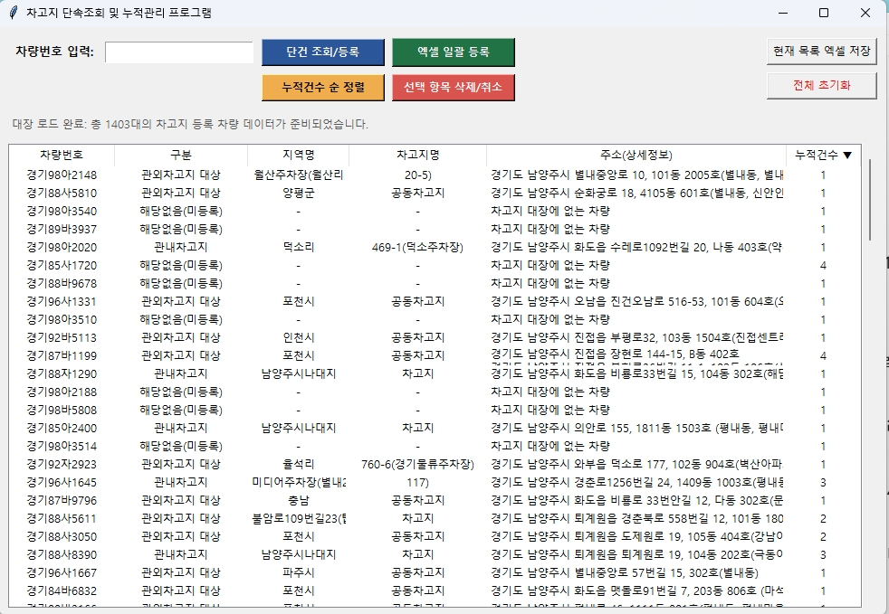

0순위 대상 단속여부 조사 프로그램
1·2등급 차량의 야간 밤샘주차 단속·민원 이력을 대조해 0순위 점검 대상을 선별합니다. 아래는 차량번호 조회와 누적 이력을 확인하는 프로그램의 화면입니다.
원본 이미지 열기 (새 탭)
전체 분석 모수
1,552대
전체 차고지 등록차량 4단계 자동 분류
0순위 · 최우선
교차 매칭 산출
즉시 현장 확인 및 행정처분 대상
1등급 · 초고위험
747대 중 원거리
포천(137)·여주(125) 등 관외 원거리
2등급 · 고위험
557대
관내 15개 읍면동 '나대지' 차고지
3등급 · 중위험
53대
관외 차량 중복·타 시군 점유 건
알고리즘 자동 분류 파이프라인
차고지 등록 데이터를 공간·유형별로 1차 분류한 뒤, 야간 밤샘주차 단속·민원 이력과 교차 매칭하여 최우선 단속 대상을 도출합니다.
STEP 1 · 데이터 수집
전체 등록차량
1,552대
차고지 위치·지목·지번 전수 분석
STEP 2 · 공간/유형별 1차 분류
1등급 (초고위험)
관외 원거리 차고지 (포천·여주 등)
2등급 (고위험)
관내 15개 읍면동 '나대지' 차고지
3등급 (중위험)
동일 지번 중복·타 시군 점유
STEP 3 · 교차 매칭
야간 밤샘주차
단속·민원 이력
단속·민원 이력
1·2등급 대상군과
실제 위반 이력 대조
STEP 4 · 최종 타깃
0순위 (최우선)
확정적 위반 의심 차량
즉시 현장 확인 및 행정처분
4단계 위험 등급 상세 분류표
등급별 필터링 및 키워드 검색으로 주요 관리 타깃과 점검 목적을 빠르게 확인하세요.
| 위험 등급 | 분류 기준 | 대상 규모 | 주요 관리 타깃 및 점검 목적 |
|---|
검색 조건에 일치하는 위험 등급 항목이 없습니다.